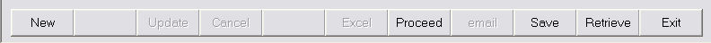
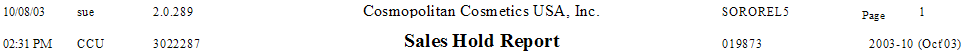

The following capabilities are found in all Report Functions:
User Interface

| New | While selecting values for the run-time options, click this button to reset the run-time report options back to the default values. After clicking proceed, this button is unavailable as the function proceeds to its task. You will see "Process Complete" in the status window when it is done. At that time, you may click this button to run this function again with the same or similar run-time option settings. After clicking "New" you will be able to change the settings as you require. Clicking "New" a 2nd time will reset the run-time report options back to the default. |
| Update | Continue with the associated update procedure (offered only after reports are prepared, and only if the function includes an update) |
| Cancel | Cancel the report (offered while the report is generating). If an Update is offered, click the Cancel button to indicate that you do not want to proceed with the update. |
| Excel | Download all tables in the report's prepared MS Access database to Excel |
| Proceed | Proceed with the generation of the report. Do not attempt to navigate back to the menu while a report is being prepared. Leave your session idle until the report is completely prepared. |
| email the reports to a pre-loaded distribution list, or to ad-hoc recipients. | |
| Save | Save the current run-time report option settings for use at a later time. Use the setting "Default" to set up the options you would like to come up by default in the future. |
| Retrieve | Retrieve a previously saved set of run-time report option settings. |
| Exit | Exit the function (close the screen), and return to the main menu. |
Explanation of Report Headings
At the top of the page of a report, you will see the following

| Col | Row | |
| 1 | 1,2 | The actual date and time that the report was prepared. If you reprint the report by selecting it in the Print Jobs Re-Submission function, the date and time will be the same as the values from the original report. |
| 2 | 2 | The User ID (sue) of the person who generated the report |
| 2 | 2 | The Company that the user was logged into (CCU) |
| 3 | 3 | The version of ABSolution that was running (2.0.289) when the report was generated. Note that every time a compile is done, that the version number changes. Most often, the 3rd number (i.e., the 289) will change and be increased by 1 every time a newly compiled version of ABSolution is issued. |
| 3 | 3 | The Oracle Session Number assigned to the user when preparing this report. This session number is also the name of the MS Access MDB that is used to drive the Crystal Report (3022287.mdb), and it may be found in the .\Program Files\ABSolution\{Windows Login Name}\MDB after the report is prepared. |
| 4 | 1 | Company Name |
| 4 | 2 | Report Title |
| 5 | 1 | Crystal Report Name |
| 5 | 2 | Execution Number. Each time the report function is generated, this number will be increased by 1. If there are several actual reports that are issued by a single report function, all of the reports prepared at the same time will have the same Execution Number. |
| 6 | 2 | Operations Period pertaining to the report. If the Operations Period is followed by an "I", then the report was prepared after Period-End Initialization, but before Period-End Finalization. If the Operations Period is followed by an "F", then the period was finalized by the time the report was prepared. If neither an "I" nor an "F" follows the Operations Period (as is the case in the example above) then the Operations Period shown was the current operations period at the time the report was prepared. |
The Crystal Report has the following built-in features:
Change the printer by clicking the icon with the printer and the wrench. Print the report by clicking the icon with the printer. You may print several copies at once.
Cick the icon with the envelope. Select the Windows application format, and then select the destination. If exporting to Excel, choose from the many versions of excel (Excel 8.0 extended is recommended). For destination, choose "Application" if you want to launch excel with the exported report appearing in the workbook, or else choose "Disk File" if you simply want to save the report as a workbook on your disk.
Enter the text that you would like to search for, and click the icon with the binoculars. The first occurrence found will be shown in the report pane; click the icon again for the next occurrence.